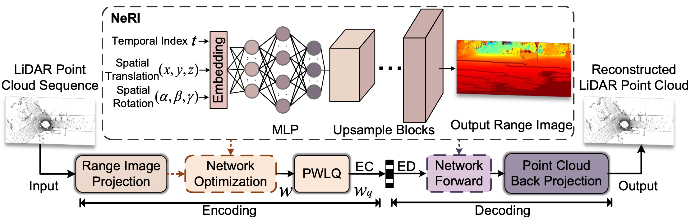
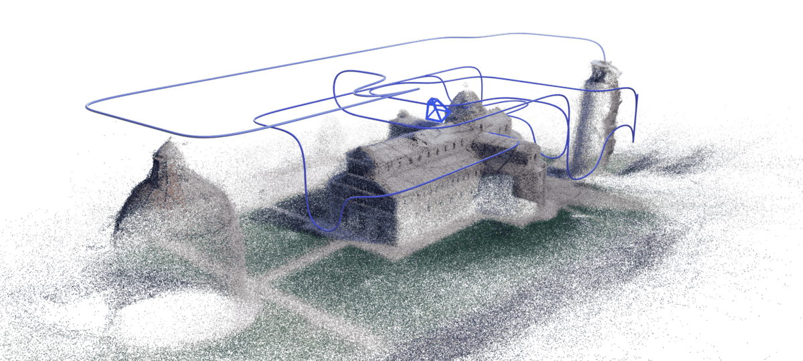
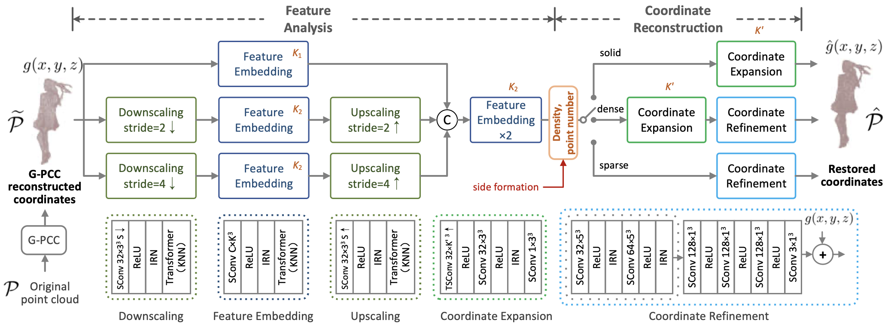

NJU Vision Lab / Prof. Zhan Ma
Ruixiang Xue薛瑞翔
Ph.D. Student, Nanjing University
Ph.D. student in Information and Communication Engineering at Nanjing University, working on intelligent point cloud compression, 3D Gaussian splatting compression, driving world models, and practical AI-assisted imaging systems.
Research Focus
About Me
Work Experience

Geely Artificial Intelligence Center
Research Intern
2026 - Present
Working on driving world models, dynamic street-scene novel-view synthesis, and restoration of world-model or 3D scene generation artifacts.
- Studied and analyzed driving world model and street-view synthesis methods including Vista, StreetCrafter, SymDrive, FreeFix, and DriveFix.
- Built evaluation and deployment workflows around StreetCrafter and UniSplat-style baselines for dynamic street-scene generation experiments.
- Explored restoration training pairs and confidence or outlier filtering strategies for novel-view artifacts in driving scenes.

OPPO Research Institute, Nebula Lab
Algorithm Intern
2024.02 - 2024.11
Worked on intelligent point cloud compression research and MPEG AI-PCC standardization.
- Developed and evaluated intelligent point cloud compression algorithms around MPEG AI-PCC standardization.
- Implemented point cloud codec software and evaluated performance across standard test sequences.
- Participated in multiple MPEG meetings, submitted 8 standardization proposals, and filed 5 invention patents.
Education

Nanjing University
Ph.D. Student, Information and Communication Engineering
2021.09 - 2027.06
- NJU Vision Lab, advised by Prof. Zhan Ma
- Research fields: intelligent point cloud compression and 3D Gaussian splatting compression
- Excellent result in doctoral qualification assessment

Hangzhou Dianzi University
B.Eng., Electronic Information Engineering
2017.09 - 2021.06
Projects

Research and development of deep learning based point cloud compression methods for MPEG AI-PCC.
- Designed Transformer models for point cloud representation and efficient spatial feature extraction.
- Used density changes during point cloud downsampling to guide reconstruction mode selection.

Compact and progressive compression for 3D Gaussian splatting scenes.
- Investigated compactification, compression, and reconstruction methods for 3D Gaussian splatting.
- Proposed RecastGS to reorganize pretrained 3DGS into a region-aware layered hierarchy with prompt-driven object extraction and progressive distillation.

Research exploration on dynamic street-scene generation, novel-view artifacts, and restoration pipelines for driving simulation.
- Surveyed Vista-style driving world models and StreetCrafter-style controllable street-view video diffusion methods.
- Compared restoration and refinement directions including Difix3D+, SymDrive, FreeFix, and DriveFix to identify gaps in artifact distribution, temporal consistency, and input requirements.
A user-friendly camera assistant prototype for composition guidance and shooting suggestions.
- Surveyed photo composition, feed-forward 3DGS reconstruction, and large-model based aesthetic quality assessment methods.
- Built an AI coding demo with image analysis, composition advice, composition preview generation, and step-by-step shooting guidance.
Publications
-
3D Gaussian Splatting Compression with Object ScalabilityEuropean Conference on Computer Vision (ECCV), 2026Accepted, not yet on arXiv
-
A Unified Point Cloud Compressor Using Universal Multiscale Conditional Coding-Part I GeometryIEEE Transactions on Pattern Analysis and Machine IntelligenceSCI Q1, CCF-A, impact factor 18.6, co-first author
-
NeRI: Implicit Neural Representation of LiDAR Point Cloud Using Range Image SequenceIEEE International Conference on Acoustics, Speech, and Signal Processing 2024CCF-B, first author
-
A Unified Point Cloud Compressor Using Universal Multiscale Conditional Coding-Part II AttributeIEEE Transactions on Pattern Analysis and Machine IntelligenceSCI Q1, CCF-A, impact factor 18.6, second author
-
GRNet: Geometry Restoration for G-PCC Compressed Point Clouds Using Auxiliary Density SignalingIEEE Transactions on Visualization and Computer GraphicsSCI Q1, CCF-A, impact factor 6.5, second author
Awards
2021 - 2025
2020